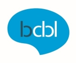
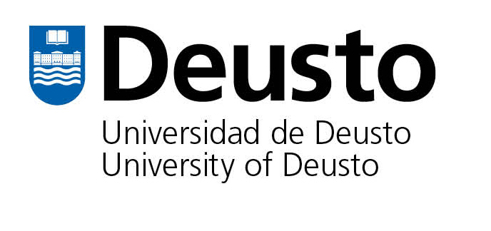

| Home | Registration | Program | Venue |
We are excited to announce the first interdisciplinary workshop on Phonology and Dyslexia that will be part of the Old World Conference on Phonology (OCP2022).
Here the neuro-cognitive study of Dyslexia will join forces with theoretical Phonology to address questions in the core of both disciplines:
- What aspects of phonological representations are affected in dyslexia?
- Can theoretical phonology provide experimental work with more fine-grained and theoretically motivated measures?
- How can theoretical phonology handle individual diverse or ‘unstable’ phonological representations?
The workshop will feature a full day scientific programme, split into two parts - morning and afternoon - broken down by lunch and coffee breaks. Each session includes Slide Presentations from speakers with diverse scientific backgrounds, followed by a Keynote address and a Poster session.
We are happy to announce our plenary speakers
|
|
|
Anastasia Klimovich-Gray
Alberto Furgoni
Antje Stoehr
Christoforos Souganidis
Clara Martin
Efthymia Kapnoula
Marie Lallier
Mina Jevtović
Shanti Ulfsbjorninn
|  |  |
| © Conference Organizers |